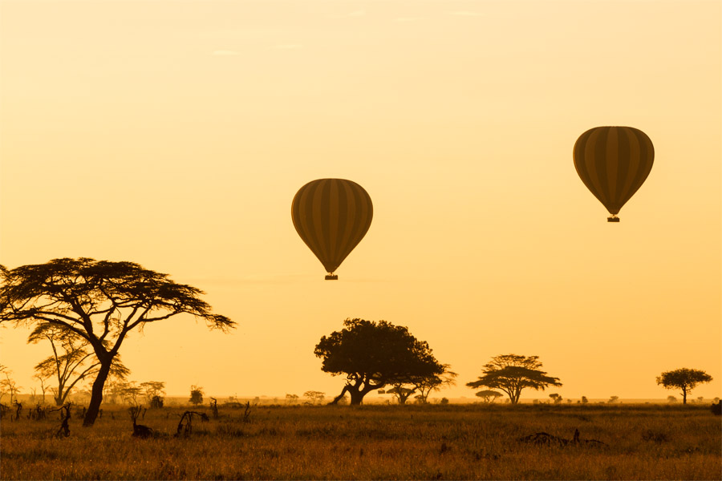

Tanzanie sur mesure: 09 Jours / 08 Nuits

Point fort:Tarangire, Lac Manyara,NgoroNgoro, Karatu, Serengeti
Jour 01:Arusha-Parc National de Tarangire:(02hrs 30 de route)
Accueil des l’arrivée,à l’aéroport,par un represantant un peu de briefing et ensuite transfert direction du parc National de Tarangire au coeur de la vallée du grand rift,couvrant2600km².Parsemé d’une foret de Baobab et et de grands arbres d’acacia,leTarangire accueil unegrande concentration des animaux lors de la saison sèche.Arrivée pour l’heure de dejeuner dans un beau lodge/camp en pension complete.
Depart en milieu d’apres midi pour une decouverte du soir jusqu’au crepuscule essayant de pister les fauves(Lions,leopards, ,guepards) parmi d’autre especed’animaux residant au parc.Retour au lodge pour le dine et nuit.
Jour 02:Parc National Tarangire:
Journée complete à la decouverte du parc nationale de Tarangire,longeant la rivièreTarangire qui constitue une source d’eau permanente pour les animaux migrant d’autre region.Creé en 1970 et consideré comme l’un des plus beaux du pays après le Serengeti en terme du nombre des animaux observable,la beauté du parcs’est bien preservée par sa faible frequentation. Dejeuner pique nique en plein coeur du parc.Diner et nuit au lodge/camp,en pension complete.
Jour 03:Parc National de Taragngire/Serengeti:(6hrs de route environs)
Debout tot le matin,petit dejeuner et depart remontant plus au nord à travers de beaux paysagesomptueux du café.Arrivée pour l’heure de dejeuner dansvotre lodge/camp du Serengeti,nuit en pension complete. Premiere rechercheanimalière du soir en milieu d’apres midi contournant les grandesplainesinfinies de la vaste ecosystem pour essayer de debusquer les fauves.LeParc National de Serengeti tient son som de mot masai‘’serengeti’’qui signifie ‘’plaines sans fin’’.Retour au lodge/camp pour le diner et nuit.
Couvrantune surface de jusqu’a 14,763km²,le Serengeti restetoujours le plus célèbre et l’un des plus vastes ecosystem entretenusd’afrique,s’etendant du sud en Tanzanievers le nord(Le masaimara) au Kenya.
Cree en 1951,le Serengeti accueillechaqueannée le spectacle migration des gnous en compagnie des zebres de gazelles de thomsonssuivibiensur des predateursque le sont les lions,guepards,leopards,crocodile entre autres.
A fin d’atteindre le nord de l’ecosystem (Le masaimaraversjuillet-aout-septembre),la migration se met en deplacement petit à petit des parc du sud pour arriver au Ndutu entre decembre et fevrier,continuantprogressivementatteignant le sud de l’ecosystem entre mars et juinavant de regagner le nord de l’ecosystem,lemasaimara,debutjuillet-aout-septembre,cettepartie de l’ecosystemconnaitraassez de pluiegarantissantainsi de paturagesfrais.La migration se remttrad’une nouvelle fois mi-octobre-novembre pour retourner au sudavant de descendre plus au sud via la region Ndutu,region sous gestion de NCA(Ngoro Ngoro Conservation Area)
Jours 04&05:Serengeti
Journée de safari complete à la decouverte des plainesinfiniesconstitué des falaisesrocheuse,lesuperlatif de tous les parcs/reserve nationaux du nordTanzanie,accueillantune forte concentration de jusqu’a 1.5 millions de gnous en compagnie de 300,000 et 200,000 gazelles de thomsonsenviron,ils’agit du celebre et impressionante theatre de la grande migration du sud(Serengeti) au nord(Masaimara au kenya) de l’ecosystem.Possibilité de changer du territoire du centre et nord du parc Serengeti.
Dejeuner pique-nique en plein coeur du parc pendant les deuxjours plein au parc.Diner et nuit au lodge/camp.
Jour 06:Serengeti/Karatu:(4hrs de route environs)
Dernier jour au parc,petit dejeuner et sortie matinale en quittant pour la region Karatu.Installation dans un beau lodge/camp aux alentours du Karatu,trouvé à 20km du parc National Ngoro Ngoro.Après midi randonnée facile en compagnie d’un guide basé sur place decouvrant la plantation du café,et la culture du peuple local.Retour au lodge/camp pour le diner et nuit.
Jour 07:Cratere Ngoro Ngoro
Depart pour journée entire de decouverte du cratere Ngoro Ngoro.Classé au patrimoine du monde de l’humanite en 1980 par l’UNESCO et designé pour la 8ème merveille naturelle du monde.Le cratere du Ngorongoro couvre 20km de diametre sur une surface de 260km(le cratere),et encore jusqu’a 8290km² sous l’ensemble de la zone NCA(Ngoro ngoro Conservation Area).Le cratere est un territoire merveilleux pour la vie sauvage où les animaux sortent et rentrent en toute liberté.Son paysage est à couper le souffle du haut du cratere. Dejeuner pique-nique en plein nature au sein du parc.Nuitdansun lodge/camp en pension complete.
Jour 08:Cratere Ngoro Ngoro/Lac Manyara:(2hrs de route environs)
Dernier jour au Ngoro Ngoro,petit dejeuner et sortie matinale en descendant direction du parc National du Lac Manyara,bien célèbre pour les lions qui grimpemensouvent aux arbres.Installation dans beau lodge/camp. Depart une première chasse du soir jusqu’au crepuscule,pour essayer de debusquer les lions(notamment sur des arbres),les éléphants,babuins,Léopard,zebres entre autre. S’étendant sous un peu moins de 400km² et avec immense lac en 50km de long,le parc rassure la survie d’une faune très importante ainsi que la fameuse colonie des flammant roses.Retour au lodge pour le diner et nuit.
Jour 09:Arusha en provenance du Lac Manyara:(2hrs de route environs)
Dernier jour au parcManyara,debout tot le matin, pour une sortie matinale essayant de pister les fauves de la chasse de nuit lorsque la temperature sera fraiche.Retour au lodge pour le petit dejeuner avant de quitter pour arusha,y arrivant au bout de deux heures de route en goudron.Transfert direct à l’aéroport pour votre vol retour ou extension sejours balnéaire surl’archipel de Zanzibar,coin des épices… Safari Njema!
Retour en haut de page
 +254 723 047 295
+254 723 047 295